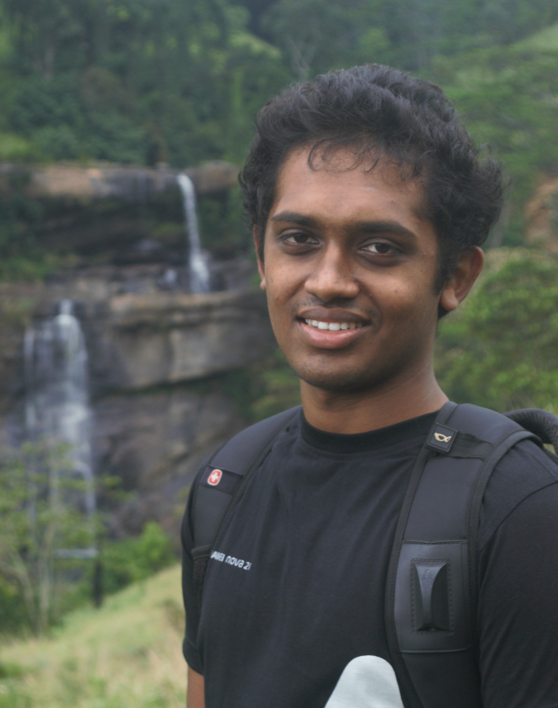

Biography
I am a B.Sc Enginnering graduate from Faculty of Engineering, University of Peradeniya in Mechanical Engineering. Currently working as a temporary instructor and a vounteering research assistant in University of Peradeniya.
Personal Details
Contact information: somathilake.eranda@gmail.com
Github | LinkedIn | Google scholar
Publications
- Assessment of Fetal and Maternal Well-Being During Pregnancy Using Passive Wearable Inertial Sensor [link]
- Fetal Movement Identification from Multi Accelerometer Measurements using Recurrent Neural Networks In-press
- Fetal Movement Detection using Long Short-Term Memory Network [link]
- Comprehensive Study on Denoising of Medical Images Utilizing Neural Network Based Auto-Encoder [link]